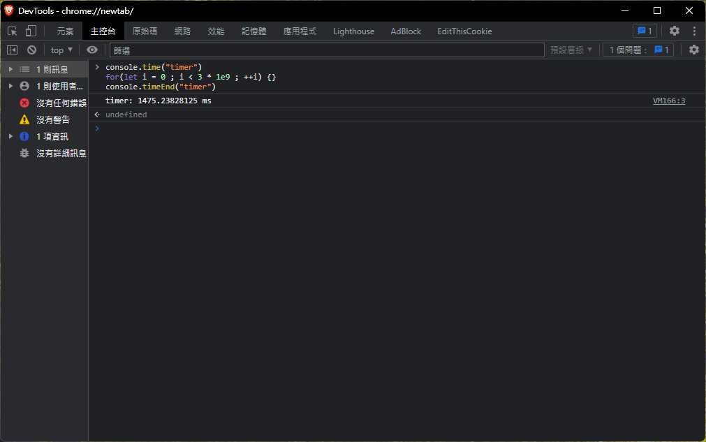
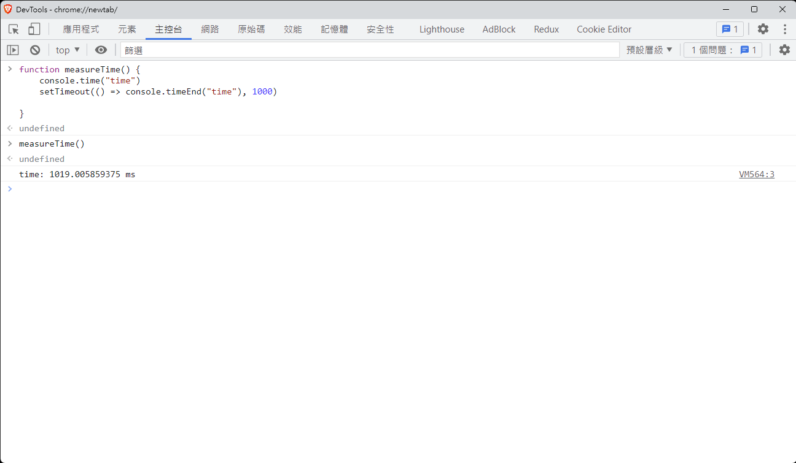

JavaScript 架構
本章節, 從非同步程式的概念開始, 假設有個程式這樣寫：
const arr = [];
arr.push(1);
arr.push(2);
arr.push(3);
arr.push(4);
console.log(arr) // [1,2,3,4]
在這個例子中, 程式碼都是由上到下執行, 因此很好預測執行結果
但如果程式碼改成以下模式：
const arr = []
let fileA = download(urlA);
let fileB = download(urlB);
let fileC = download(urlC);
while( !(fileA.done && fileB.done && fileC.done) ) {
if(fileA.done && !fileA.lock) {
arr.push(fileA.content);
fileA.writeLock();
}
if(fileB.done && !fileB.lock) {
arr.push(fileB.content);
fileB.writeLock();
}
if(fileC.done && !fileC.lock) {
arr.push(fileC.content);
fileC.writeLock();
}
}
假設download程式碼, 可以下載某個URL提供的資料, 並且分別用 done 表示下載完成, 以及 content 表示下載的內容
此例進行下載三個網站的內容, 並不斷檢測是否下載完成；如果有任何網站還未下載完成, 就不會離開迴圈
迴圈會依序檢查A、B、C的內容, 若下載完成, 把資料放入arr中, 並且上鎖防止重複寫入
答案是不確定
可以改成： arr[0] = fileA.content 這種做法來確定資料的順序, 但是當資料列表變大的情境, 要處理的細節就會越來越多
或是操作順序有時序性：需要先登入銀行、然後才能操作帳戶
當操作的步驟越來越繁瑣, 卻又需要知道式健順序, 無法確定API回傳順序時 - 在網路世界中, 程式的執行順序, 不等同於資料的取得順序
JavaScript 引擎架構

模擬一個情境：
在 C++ 中, 可能使用 cin 或是 scanf 來得到使用者的輸入, 程式碼如下：
cin >> num;
cout << "Hello, world" << endl;
cin 會嘗試取得使用者輸入, 然後輸出 "Hello, world"。但是使用者輸入之前, 畫面是不會繼續渲染的, 這在交互式的 command interface 不是問題
但是到了 GUI 卻相當嚴重, 比方說登入頁面, 在你輸入帳號、密碼之前, 畫面上其他部分都停止繪製, 這不是一個好的體驗
因此瀏覽器採用"事件驅動", 透過觀察者模式 (設計模式的一種, 不贅述), 等待用戶發出的事件, 並進行響應
<button onclick="alert('My name is Alex')">Click Me</button>
當點下按鈕後, 會push clickEvent 至事件佇列(Event Queue), 圖中的 EventLoop, 是一個無窮迴圈, 會不斷檢查Event Queue, 若裡頭有資料, 生成Task給後面的執行緒池
Task Queue 紀錄等待執行的工作, 由後方的Worker取出後執行, 完成後調用註冊的 Handler
這就是關鍵所在, 因為不知道使用者何時輸入/點擊畫面, 因此需要用某種機制來控制渲染的執行緒、網路請求執行緒、JS執行緒, 讓所有元件在正確的時間點運作
有了這個概念, 再追加補充：JavaScript有分成 main thread 與 job thread(或者說是 worker, task thread), 而所有的非同步事件會先扔至 job thread, 靜待瀏覽器調用
比方說 setTimeout(fn, ms), 接受一個function和毫秒的數值, 就會在 N 毫秒後調用該方法
setTimeout(() => console.log('test'), 1000) // 1秒後印出 'test'
可能實現的原理如下：
- 瀏覽器會初始化一個 timer, 紀錄經過的毫秒數
- 呼叫
setTimeout時, 放置一個事件在job thread - 每次 Eventloop 的週期, 當
main thread的工作清空後, 檢查job thread - 如果
job thread裡面有事件, 檢查註冊的時戳, 並比較current - reg_timestamp是否逾時 - 如果上述為真, 代表事件應該要執行了, 調用
- 回到步驟3
比方說設定了 setTimeout(fn, 1000), 當時戳相減超過 1000時 , 調用 fn
假設有個情境如下：要輸出1 ~ 5, 每一秒輸出一個數字, 程式設計如下：
setTimeout(() => console.log(1), 1000);
setTimeout(() => console.log(2), 2000);
setTimeout(() => console.log(3), 3000);
setTimeout(() => console.log(4), 4000);
setTimeout(() => console.log(5), 5000);
這時候, "好像"跟預期的一樣：
首先, 如何證明main thread結束後, 才會執行job thread的工作？
證明如下：setTimeout會把事件放入job thread, 首先設定setTimeout(fn, 0);
let arr = [];
setTimeout(() => arr.push(1), 0); // Enqueue - job thread
setTimeout(() => arr.push(2), 0); // Enqueue - job thread
setTimeout(() => arr.push(3), 0); // Enqueue - job thread
arr.push(4) // main thread
console.log(arr) // [4, 1, 2, 3]
該程式碼揭露的：因為前面三次push是放在job thread的, 因此狀況就好像：
JobThread = [fn, fn, fn];
MainThread = [fn];
必須等到 MainThread 清空後, 才會依序執行 job thread 內的工作
setTimeout 與 setInterval：
- setTimeout - 經過至少多少毫秒後, 應該調用 function
- setInterval - 每隔至少多少毫秒後, 應該調用 function
首先定義基準時間：

在筆者的電腦上, 執行 3 * 109次 空迴圈大約耗時 1500ms, 接下來分別推入5個事件到job thread中：
使用 performance.now用來取得分頁開啟後的累積時間, 並透過 setTimeout 放入 job thread

定義 diffTime：計算陣列前後項的時間差, 相當於是 setTimeout 放入時戳的間隔
首先定義五個 job, 都是放入一個時戳到timestamps[]中, 最後手動呼叫 diffTime
可以看到每一次的時間間隔大概是 90~100ms 左右
接下來設計一個實驗：
function diffTime(arr) {
for(let i = 0; i < arr.length - 1 ; ++i) {
console.log(`time pass: ${arr[i+1] - arr[i]} ms`);
}
}
// 放入5個 Task 到 job thread 中
let timestamps = [];
setTimeout(() => { timestamps.push(performance.now())}, 100);
setTimeout(() => { timestamps.push(performance.now())}, 200);
setTimeout(() => { timestamps.push(performance.now())}, 300);
setTimeout(() => { timestamps.push(performance.now())}, 400);
setTimeout(() => { timestamps.push(performance.now())}, 500);
// 使用 for-loop, 阻塞 main thread 1500ms 左右
console.time("timer")
for(let i = 0 ; i < 3 * 1e9 ; ++i) {}
console.timeEnd("timer")
// diffTime(timestamps) 最後手動呼叫, 查看每個元素被放入的時間差

這個結果的意義：
- 假定在
t0的時候執行腳本 - 分別設定事件：放入時戳到
timestamps中, 分別在t0 + (100 * i)ms的5個時間點調用push(i 表示第 i 個事件) - 程式繼續執行繼續往下, 使用
for-loop阻塞main thread1492ms - 對瀏覽器來說, 在
t0 + 1492ms的時間點後,main thread的所有任務結束 - 此時檢查
job thread中的 task, 5 個 Task 都逾時了 - 依序執行 5 個 Task
另外還有兩個單純的測試方法：
首先執行, 會看到大約每間隔一秒, 畫面會輸出一個數字
setTimeout(() => console.log(1), 1000);
setTimeout(() => console.log(2), 2000);
setTimeout(() => console.log(3), 3000);
setTimeout(() => console.log(4), 4000);
setTimeout(() => console.log(5), 5000);
接下來改成執行：
setTimeout(() => console.log(1), 1000);
setTimeout(() => console.log(2), 2000);
setTimeout(() => console.log(3), 3000);
setTimeout(() => console.log(4), 4000);
setTimeout(() => console.log(5), 5000);
window.alert('block!');
alert 會跳出一個提示框, 他會強制阻塞main thread, 等到5秒後把提示框給點掉

然後再看看 console.log 的輸出, 會發現1~5會同時輸出；
另一個簡單的作法：
while(true) {}
setTimeout(() => console.log(), 0); // 永不執行, 因為 main thread 被 while-loop 永遠阻塞
關於 setTimeout 或 setInterval
前述的例子中, 有點像是證明 main thread 與 job thread 的關係, 如果只是證明：setTimeout和setInterval 是至少 N 毫秒後執行
可以透過 console.time 和 console.timeEnd 兩組函數, 觀測瀏覽器回傳的時間差異

如圖所示, 計時開始與結束的時間是 1019ms, 實際上與 1000ms 還是有一點誤差